Helping people know a part fits their car before they buy it.
Most AutoZone customers aren’t browsing. Something broke, and they need the right part for their specific vehicle. As a Senior UI Designer and design lead for the Product Discovery team, I designed the Product Finder and the AutoZone Rewards enrollment flows, and I contributed to the full site relaunch in 2020.
Customers usually don’t know their oil weight, wiper sizes or spark plug type. They guess, or leave to look it up. At the same time, the whole site was being rebuilt, during a pandemic, for millions of customers.
Hands-on UI design for Product Discovery, plus direction, design approvals and mentoring for nearly a dozen designers and interns.
The Product Finder shipped with 3 categories and grew to 8. It has since been retired, and AutoZone now shows fit with tags on each product. The relaunched site went live in 2020 with no reported drop in traffic.
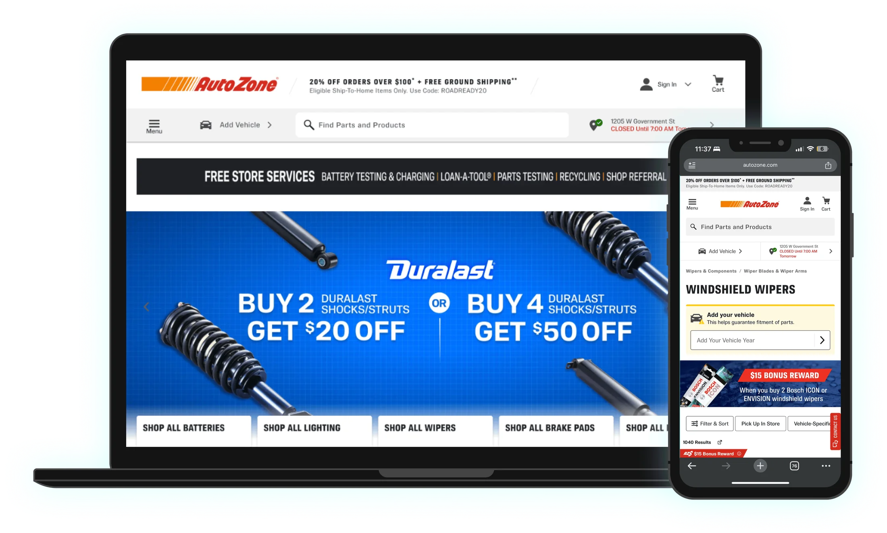
The Product Finder
Once a customer set their vehicle, the top of the product list showed that vehicle’s specs: wiper sizes for each side, oil weight, type and capacity, or spark plug count and metal. I designed the UI and helped work out which specs to show. It launched with oil, wipers and spark plugs, then expanded to antifreeze, wheel nuts, brake fluid and transmission fluid.
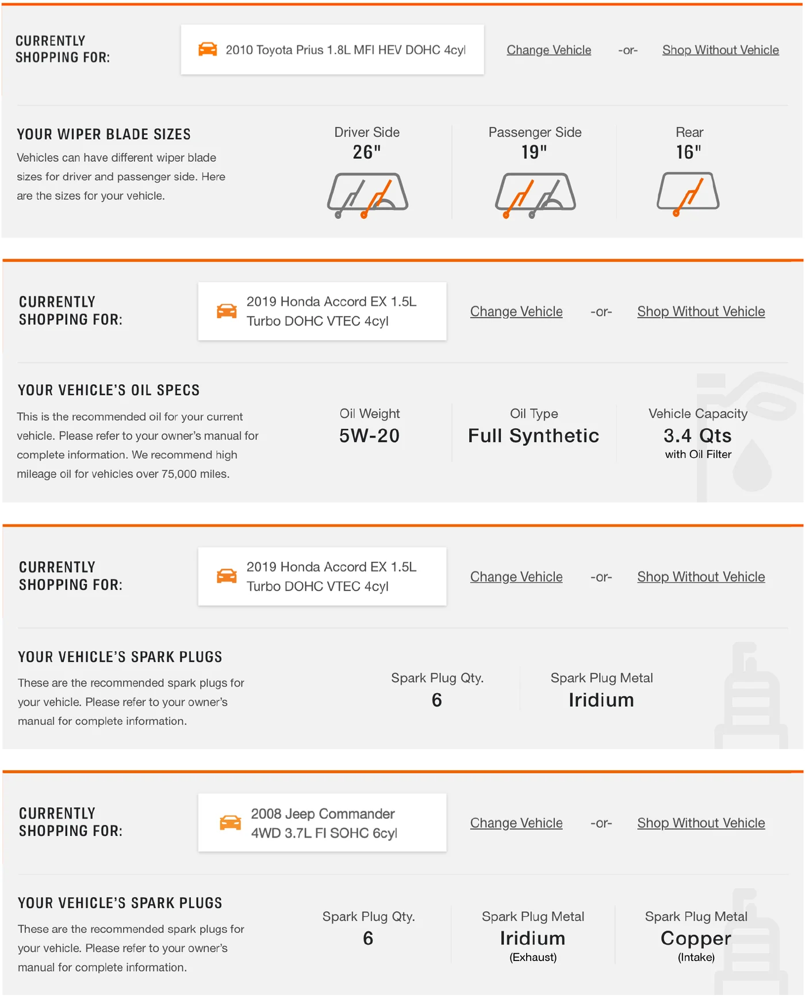
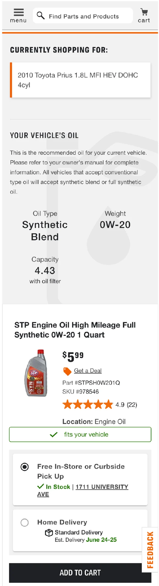
AutoZone Rewards enrollment
Joining Rewards at checkout sounds like one flow, but customers came in three different situations, each with its own prompts, errors and recovery paths.
Offer to create an account and join in one step, without losing the cart.
Let them link the Rewards ID they already use at the register.
Prompt at the cart to enter an existing ID or create one, then confirm it was applied.
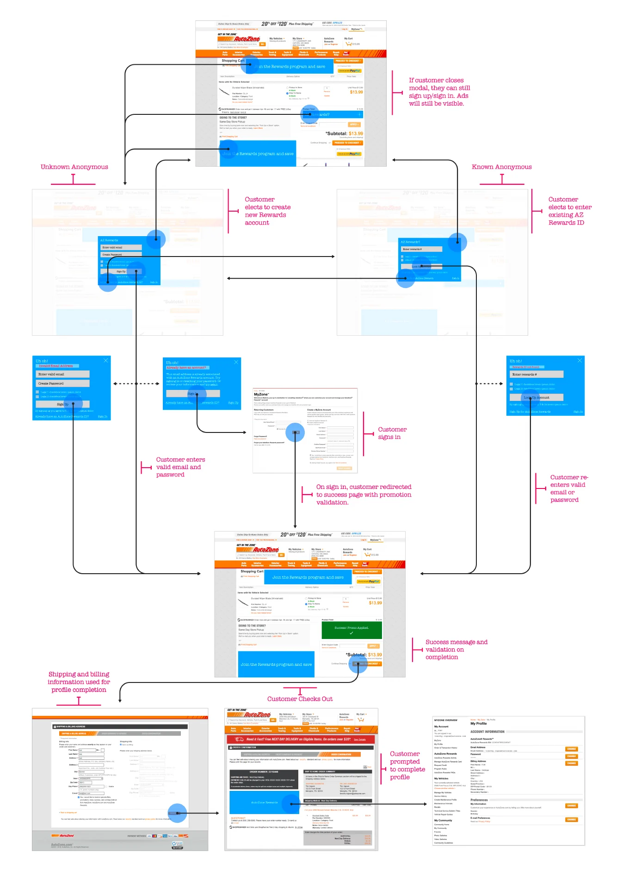
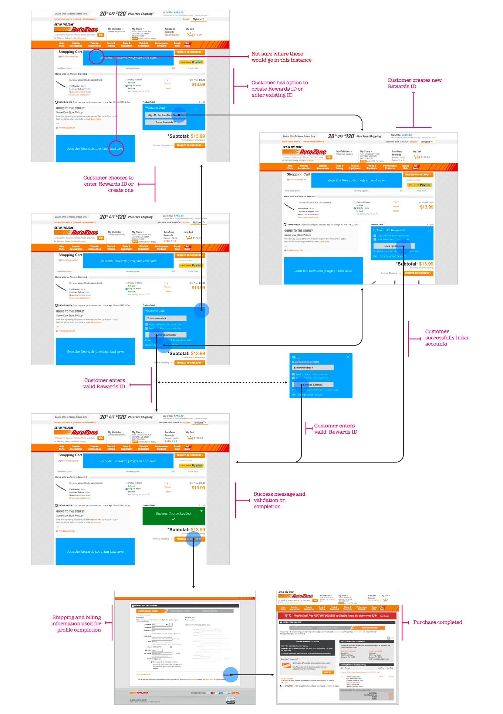
The relaunch
I contributed to the redesign of AutoZone.com that launched in 2020. The “today” screens show the site as it looks now. It has kept evolving since I left, but it still follows the structure the relaunch set up.
Home page
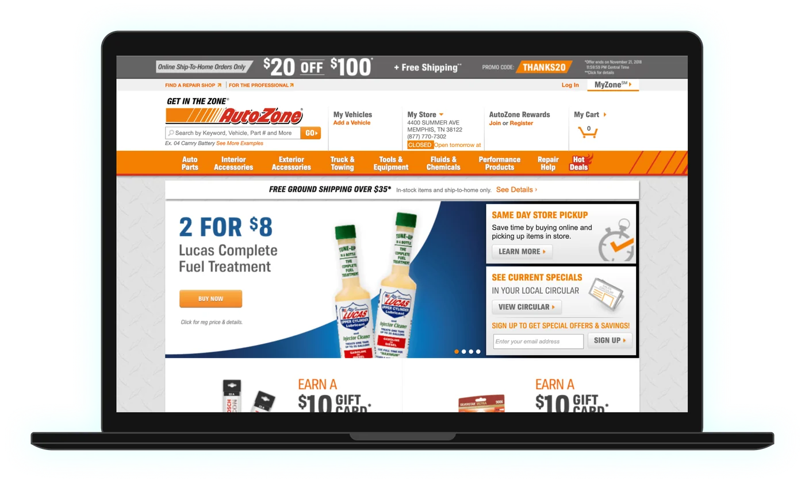
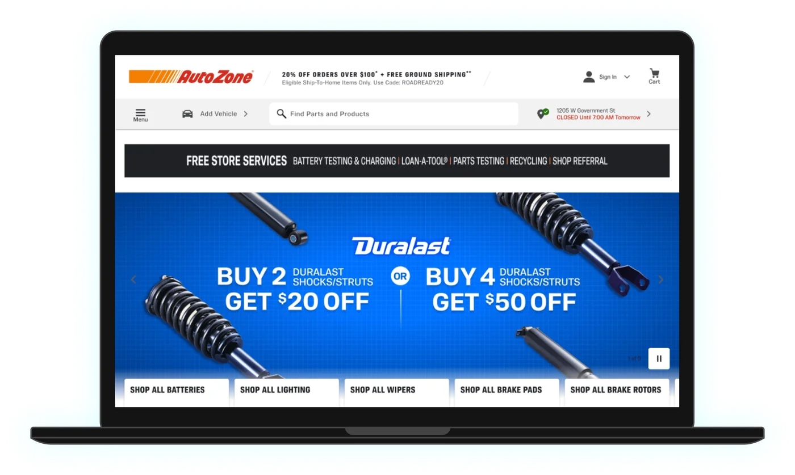
Product list
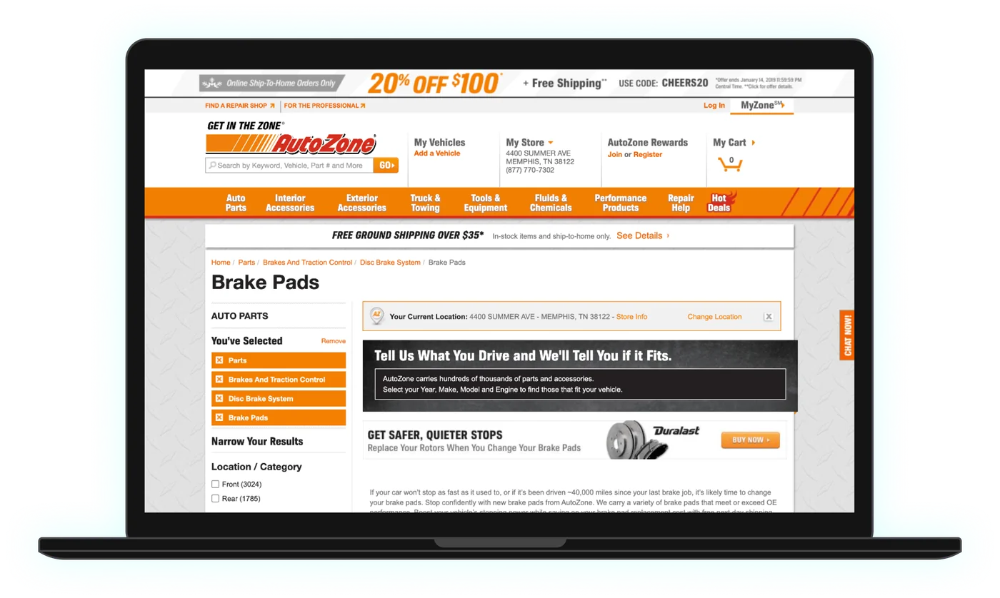
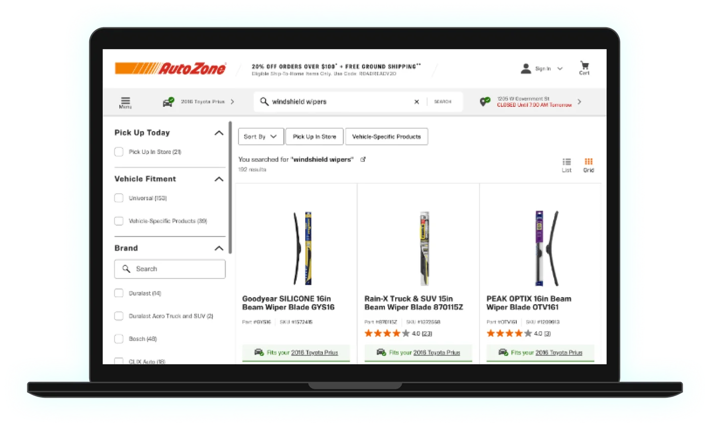
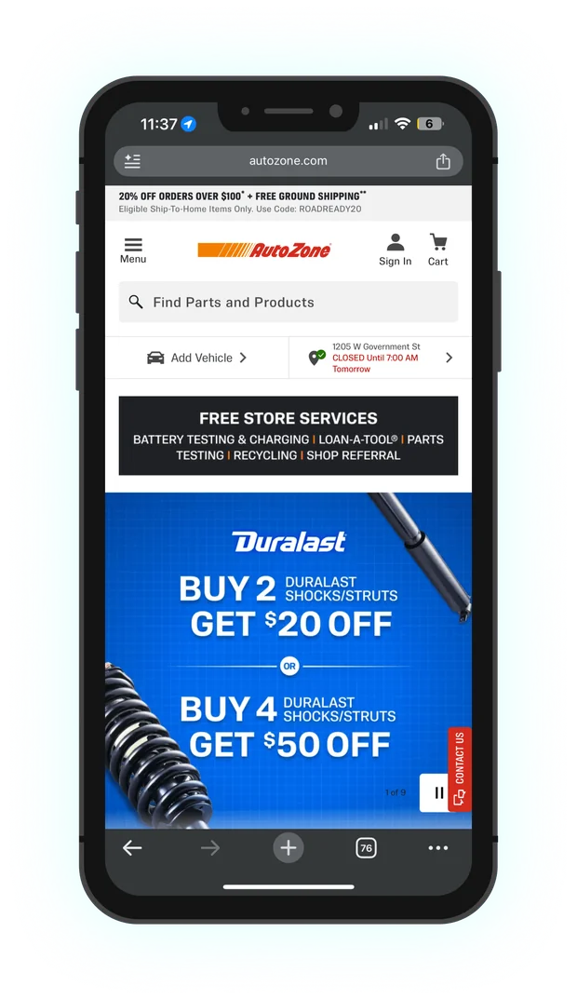
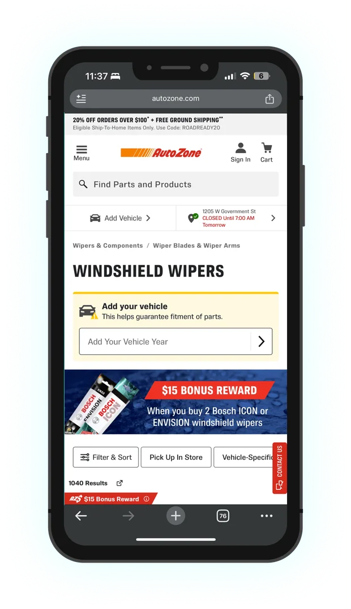
Decisions that mattered
Show the spec where the decision happens
Instead of sending people to an owner’s manual or a separate lookup, the Product Finder put the answer at the top of the product list, right above the products that match it.
One component, many kinds of parts
Wipers need three sizes, oil needs weight, type and capacity, and some engines need two kinds of spark plug. I designed one flexible layout for all of them, which made it easier to grow from 3 categories to 8.
Design every Rewards situation, not just the common one
Each of the three enrollment paths started from a different place and could fail in different ways. Mapping all three, including closed modals and wrong passwords, kept edge cases from turning into dead ends at checkout.
Growing the team
I set direction, handled design approvals and onboarded new designers. I also mentored nearly a dozen junior and associate designers and interns.
What changed
Product Finder categories, from oil, wipers and spark plugs to antifreeze, wheel nuts, brake fluid and transmission fluid.
Rewards enrollment paths designed end to end, each with its own error and recovery states.
Reported drop in traffic when the relaunched site went live in 2020, mid-pandemic.
The Product Finder was later retired. Fit is now shown with tags on product listings, which carries the same idea: answer “will this fit?” on the product itself.
Have an e-commerce problem? Let's build something.
I love talking about design and hard problems. Drop me a line or connect on LinkedIn. I'd love to hear from you.